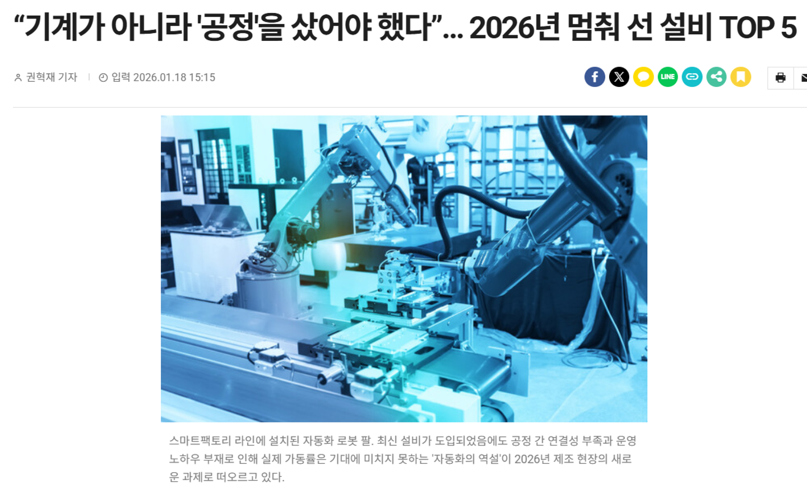
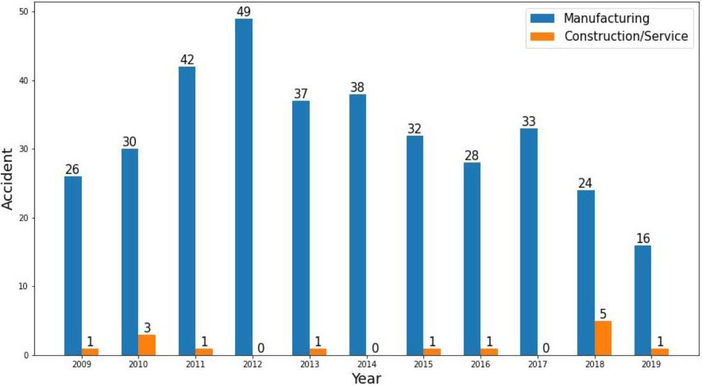
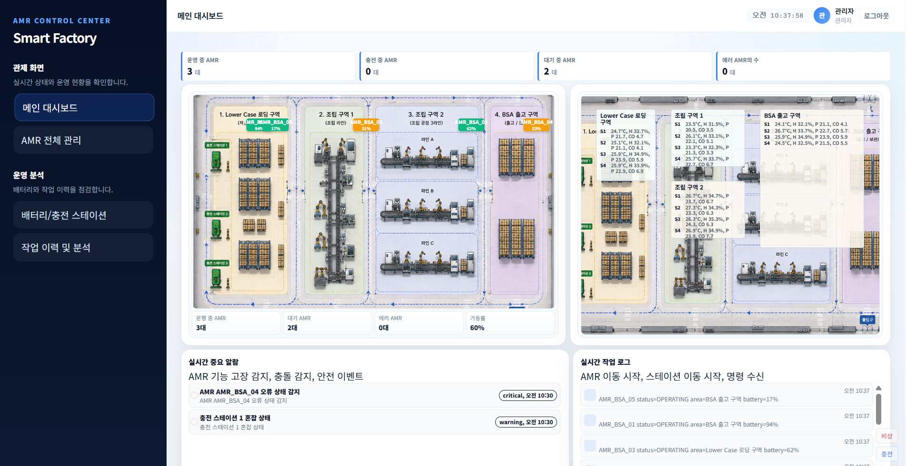
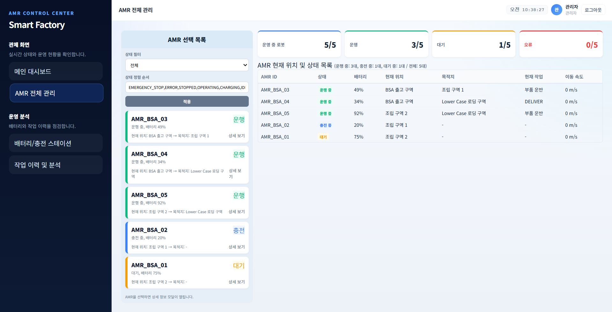
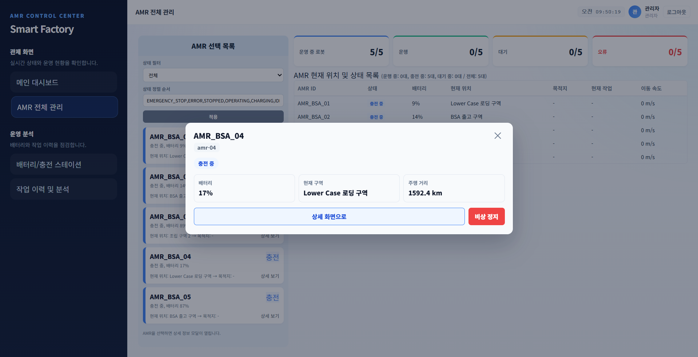
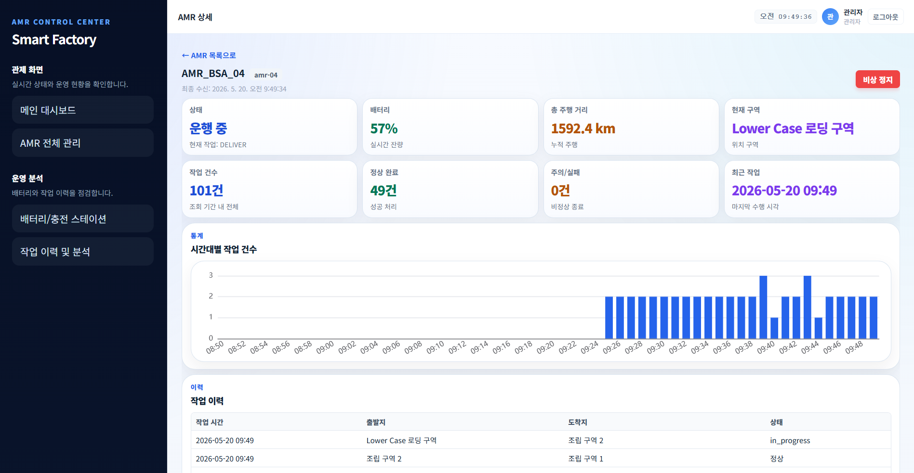
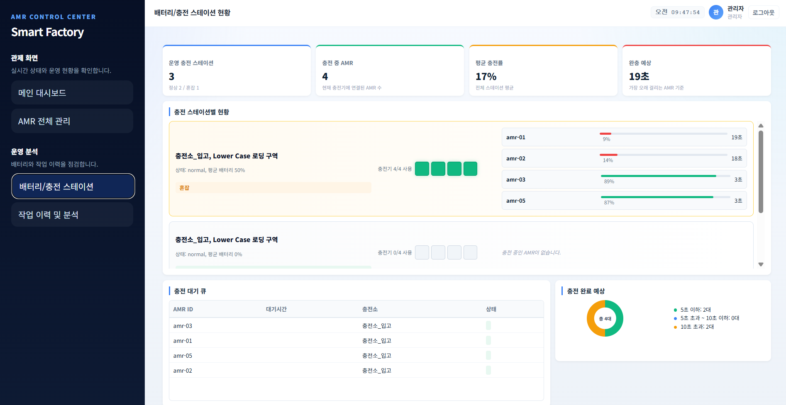
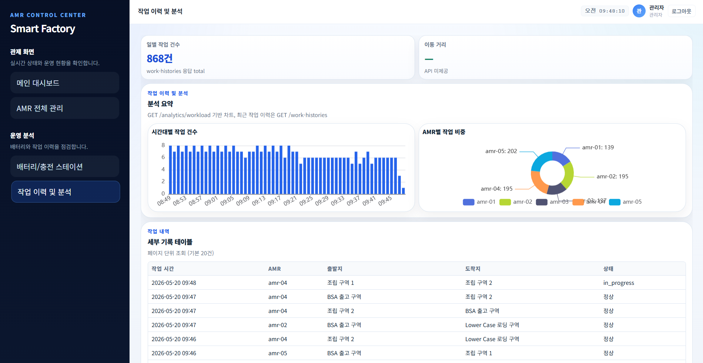

gantt
title AMR 통합 모니터링 프로젝트 WBS
dateFormat YYYY-MM-DD
axisFormat %m/%d
section 착수
수행계획 및 역할분담 :done, kickoff, 2026-05-08, 1d
section 설계
주제 기능 화면 아키텍처 :done, design1, 2026-05-08, 2d
요구사항 화면설계 API 스키마 :done, design2, 2026-05-11, 3d
section 구현 PM
WBS 일정 QA 산출물 :done, pm, 2026-05-11, 10d
section 구현 FE
인프라 화면 API MQTT UX :done, fe, 2026-05-14, 7d
section 구현 BE
API DB 연동 Swagger :done, be, 2026-05-14, 7d
section 구현 DAS DB
물리모델 수집파이프라인 :done, das, 2026-05-14, 7d
section 마무리
통합테스트 :done, test, 2026-05-18, 3d
최종보고 :done, report, 2026-05-18, 4d
단계
기간
핵심 산출
착수
05-08
수행계획, 역할 분담
설계
05-08 ~ 05-13
화면 설계서, API 정의, ERD, ADR
구현
05-14 ~ 05-20
FE 관제 UI, BE API, DAS MQTT, Docker 통합
마무리
05-18 ~ 05-21
통합 테스트, 최종 보고
3. 수행 절차
수행 방법론
flowchart TB
subgraph design ["설계 우선"]
D1["도메인 조사 AI 보조"] --> D2["docs 명세 확정"]
D2 --> D3["ADR로 경계 고정"]
end
subgraph dev ["구현"]
I1["영역별 TODO 1항목씩"] --> I2["Copilot/Cursor 구현"]
I2 --> I3["Docker 스모크"]
end
subgraph qa ["품질"]
Q1["PR + Copilot Review"] --> Q2["팀 approve merge"]
end
design --> dev --> qa
Git flow: feature/ → PR → merge commit으로 dev 병합
문서 원본: GitHub docs/ (API, 스키마), Confluence는 동기화 복사본
커밋: 태그(영역): 설명 스페이스-키 #이슈
4. 수행 경과
4.1 프로젝트 배경 (상세)
현장 페인포인트
연동 미비: AMR 단독 운용, 상위 시스템(MES/WMS)과 데이터 단절
안전, 효율 트레이드오프: 안전 기준 충족을 위해 속도 제한 → 생산성 저하 → 로봇 운영 포기 사례
하드웨어, 소프트웨어 리스크: 센서 교란, 충돌, 데드락, 잘못된 AI 작업 지시
관제 수요
AMR, 설비, 공정 데이터 실시간 통합 가시성
알람, 환경 상관 분석을 통한 선제적 이상 감지
이동 경로, 병목 분석 기반 레이아웃 최적화 근거
4. 수행 경과
4.1 선정 근거: 현장 이슈와 통계
제조 현장에서 AMR·자동화 도입만으로는 운영 효율과 안전이 보장되지 않음을 보여 주는 자료이다.

운영 효율 정체: 최신 설비 도입에도 공정 간 연결성·운영 노하우 부족으로 가동률이 기대에 못 미치는 「자동화의 역설」이 제기된다.

안전 리스크: 제조업 로봇 사고 건수는 건설·서비스 대비 높게 나타나, 통합 관제와 비상 대응 체계가 필요하다.
4. 수행 경과
4.2 프로젝트 개요: 무엇을, 왜
무엇을 하는가
웹 기반 통합 관제 대시보드로 AMR 위치/상태, 환경, 충전, 작업 이력을 실시간 표시하고, 비상 정지, KPI, 알람으로 운영자가 즉시 대응할 수 있게 한다.
통합 배포: 프로젝트 루트 compose.yml (Mosquitto, MySQL, Node-RED, BE, FE). BE와 DAS는 직접 연동하지 않는다.
4. 수행 경과
4.4 기술 스택: 역할 및 연동 관계
런타임 스택 우선. 각 박스 = 기술명 + 본 프로젝트에서의 역할
flowchart LR
subgraph fe ["프론트엔드 FE"]
direction TB
fe_vue["Vue.js 로그인, SCR-01~05"]
fe_echarts["ECharts SCR-04/05 차트"]
fe_mqtt["mqtt.js 맵 좌표, 환경 16"]
end
subgraph be ["백엔드 BE"]
direction TB
be_auth["JWT Security"]
be_rest["REST API 관제·명령"]
be_ws["WebSocket 상태 푸시"]
be_sim["운행 스케줄 작업, 배터리"]
be_jpa["JPA"]
end
subgraph data ["데이터, DAS"]
direction TB
db_mysql[("MySQL init.sql 시드")]
das_mq["Mosquitto 1883, 9001"]
das_nr["Node-RED 좌표, 환경 발행"]
end
fe_vue -->|"REST"| be_rest
fe_echarts --> be_rest
fe_vue -->|"구독"| be_ws
fe_mqtt <-->|"sub, pub"| das_mq
das_mq --> das_nr
be_auth --> be_rest
be_rest --> be_jpa
be_sim --> be_jpa
be_jpa --> db_mysql
be_ws --> be_jpa
be_rest -.->|"비연동"| das_nr
실선: 서비스 데이터 흐름점선: BE와 DAS 비직접 연동
구분
기술
프로젝트 역할
연동 관계
FE
Vue.js
로그인, SCR-01~05 관제, 비상 정지
→ BE REST, WebSocket
Apache ECharts
충전 예측, 작업 부하 차트
→ BE REST
mqtt.js
환경 센서, AMR 좌표, 비상 명령
↔ Mosquitto
BE
Spring Security + JWT
로그인, API 보호
→ REST, WS
RESTful API
관제·명령·이력 API
↔ FE, → JPA
WebSocket
AMR 상태·요약 갱신 이벤트
↔ FE
운행 + JPA
작업·배터리·자동 복구·명령 이력
→ MySQL
DAS
Node-RED
좌표·환경 발행, 비상 정지 수신
↔ MQTT
Mosquitto
MQTT 브로커
↔ FE, Node-RED
DB
MySQL
운행·이력 기준 저장소
← BE
4. 수행 경과
4.4 시스템 구성도 및 데이터 흐름
sequenceDiagram
participant U as 운영자
participant FE as Frontend
participant BE as Backend
participant DB as MySQL
participant DAS as Node-RED
U->>FE: 비상 정지 클릭
FE->>BE: POST emergencyStop command
BE->>DB: EMERGENCY_STOP 반영 commit
BE-->>FE: accepted true
FE->>DAS: MQTT factory/amr/command
Note over BE,DAS: BE와 DAS는 직접 연동하지 않음
BE-->>FE: WebSocket status updated
조회·집계: BE REST , 맵·환경: DAS MQTT , 자동 복구: BE 스케줄(약 60초)
모니터링 요소: 공장 환경, AMR 위치, 상태(IMU, SoH, 적재), 제조, 작업 데이터
4. 수행 경과
4.5 페이지별 기능 (개요)
화면별 의도, 운영 가치, 제공 기능을 정리. SCR-01~05 상세는 다음 슬라이드.
화면
운영 가치
화면의 목표
SCR-01 메인 대시보드
전장 상황을 한 화면에서 즉시 파악, 이상 구역·우선 조치 선별
짧은 시간 내 1차 상황 판단
SCR-02 AMR 전체 관리
전체 AMR 단위 병목·유휴·이상 장비 일괄 파악
선제적 운영 리스크 관리
SCR-03 AMR 개별 관제
한 대 집중 확인, 비상 정지 및 상황 공유
이상 발견 후 최소 단계 대응
SCR-04 충전 현황
충전 병목·대기 분산, 당일 물류 계획 조정
충전으로 인한 가동 중단 방지
SCR-05 작업 이력, 분석
생산성·피크 구간 측정, 운영 회의 근거
객관적 보고와 의사결정 지원
4.5 페이지별 기능
SCR-01
메인 대시보드

공장 전체를 한눈에 보고, 현장에서 무엇이 일어나는지 즉시 파악합니다.
의도와 목적
AMR, 환경, 알람, 작업 로그가 여러 화면과 시스템에 흩어져 있으면 대응이 늦어집니다. 이 화면은 통합 관제의 시작점으로, 운영자가 스크롤 없이 한 화면에서 현장 상황의 전체 그림을 얻도록 설계했습니다.
운영 가치
평면도에서 AMR 위치·상태를 색으로 구분해 이상 구역을 신속히 특정할 수 있습니다.
구역별 온도·습도·미세먼지를 함께 보며 환경 이상과 설비 이상을 동일 맥락에서 판단합니다.
운영·대기·충전·에러 현황과 미해결 건수로 우선 조치 대상을 선별합니다.
중요 알람과 작업 로그로 사고 확대 전 선제 대응 체계를 지원합니다.
제공 기능
상태 요약 카드: 운영·대기·충전·에러 AMR 대수, 가동률 한눈에 표시
공장 평면도: 구역별 AMR 위치·이동 경로, 장비 ID·배터리·상태 색상 구분
환경 모니터링: 구역당 4개 센서(온도, 습도, 미세먼지, CO) 합계 16지점 실시간 표시
중요 알람: 장비 오류·충전소 혼잡 등 심각도별 알람 목록
작업 로그: 이동·작업 이벤트를 시간순으로 스트리밍
비상 트리거: 대시보드에서 비상 상황 발생·대응 진입
목표: 여러 창을 돌아다니지 않고도, 공장 물류와 안전 상태의 1차 판단을 끝낸다.
4.5 페이지별 기능
SCR-02
AMR 전체 관리


전체 AMR을 목록과 상태 통계로 묶어, 운영 리스크를 전체 AMR 단위로 관리합니다.
의도와 목적
대시보드가 「지금」에 집중한다면, 이 화면은 전체 AMR의 운영 상태를 다룹니다. 장비별 상태·배터리·작업을 한곳에서 비교해 반복되는 운영 리스크를 관리하려는 목적입니다.
운영 가치
모든 AMR의 상태·위치·배터리·작업을 표와 목록으로 비교해 병목·유휴·이상 장비를 일괄 파악합니다.
상태·정렬 필터로 우선 점검이 필요한 자산을 신속히 좁힙니다.
상세 모달·개별 관제 화면으로 이어져 탐색에서 조치까지 흐름이 끊기지 않습니다.
제공 기능
AMR 요약: 전체·운행·대기·오류 대수 실시간 집계
상태 필터·정렬: 운행/충전/대기/비상 등으로 장비 목록 축소
AMR 카드 목록: ID, 배터리, 현재·목적 구역, 상세 보기 링크
상태 테이블: 위치, 목적지, 현재 작업, 이동 속도 일괄 조회
빠른 상세 모달: 카드에서 배터리·구역 확인 후 비상 정지 또는 상세 화면 이동
목표: 개별 사고 대응을 넘어, 전체 AMR 단위로 운영 이상과 취약 장비를 선제적으로 찾는다.
4.5 페이지별 기능
SCR-03
AMR 개별 관제

특정 AMR에 집중해 상태·이력·비상 조치를 한 화면에서 마칩니다.
의도와 목적
통합 화면에서는 깊이 있는 판단과 즉각적인 통제가 어렵습니다. 이 화면은 한 대의 로봇에 대해 「지금 무슨 일이 일어나는가」, 「무엇을 할 수 있는가」에 답합니다. 비상 정지는 현장 안전과 가동 중단 범위를 좁히는 핵심 수단입니다.
운영 가치
작업·배터리·위치·주행 거리 등 운영 정보를 모아 현장과 동일 수준의 상황 공유가 가능합니다.
오류·고장 정보가 있으면 원인 파악과 대응 우선순위를 먼저 정할 수 있습니다.
비상 정지 시 명령이 기록되고 현장이 정지되어 조직 전체가 동일 기준으로 인지합니다.
누적 주행·작업 이력으로 해당 자산의 운영 패턴을 검토할 수 있습니다.
제공 기능
운영 KPI: 상태, 배터리, 총 주행거리, 현재 구역, 작업 건수·정상/실패
시간대별 작업 통계: 최근 1시간 작업 건수 막대 차트
작업 이력: 출발·도착·상태(진행/정상) 테이블
비상 정지: 상단 비상 정지 버튼, BE 기록 후 MQTT로 현장 정지
목록 연동: AMR 전체 관리의 상세 모달에서 바로 진입
목표: 이상 징후 발견 후, 해당 AMR에 대한 확인·정지·보고를 최소 단계로 완료한다.
4.5 페이지별 기능
SCR-04
배터리 / 충전 스테이션 현황

충전 자원의 점유·대기·완충 예상을 한 화면에서 관리합니다.
의도와 목적
AMR 물류는 움직일 수 있는 대수에 좌우됩니다. 충전소 점유, 대기열, 완충 예상 시간을 한곳에 모아 가동 중단을 충전 문제로 막지 않으려는 화면입니다.
운영 가치
스테이션별 연결·충전 상태·혼잡 여부로 충전소 배치와 대기 분산을 결정합니다.
충전 중 AMR 목록과 완충 예상으로 당일 물류 계획을 현실적으로 조정합니다.
완충 예상 분포로 충전 소요 패턴을 한눈에 파악합니다.
대기열에서 장비를 선택해 개별 관제로 넘어가 충전·운행 이슈를 연계 분석합니다.
제공 기능
요약 카드: 가동 충전소, 충전 중 AMR, 평균 충전률, 최장 완충 예상
스테이션별 현황: 점유 슬롯, 혼잡 표시, AMR별 배터리·잔여 시간
충전 중 AMR 목록: 스테이션별 충전 중 장비와 진행률
충전 대기열: 대기 AMR, 대기 시간, 목표 스테이션
완충 예상 도넛: 5초/10초/그 이상 구간별 완료 예측 분포
목표: 배터리·충전 때문에 생산 라인이 멈추기 전에, 충전 운영을 재배치한다.
4.5 페이지별 기능
SCR-05
작업 이력 및 분석

지나간 작업·이동 데이터를 숫자와 추이로 돌아봅니다.
의도와 목적
실시간 관제만으로는 물류가 실제로 얼마나 수행됐는지, 어디가 비효율인지 설명하기 어렵습니다. 이 화면은 이력과 분석을 통해 공정 개선·인력 배치·레이아웃 검토에 필요한 운영 인사이트를 제공합니다.
운영 가치
일별 작업 건수·이동 거리·작업 시간으로 생산성과 부하를 객관적으로 측정합니다.
시간대별·AMR별 작업 비중으로 피크 구간과 과부하 자산을 식별합니다.
작업 내역(출발·도착·상태)으로 사고·지연의 전후 맥락을 추적합니다.
요약 지표로 운영 회의와 개선안에 쓸 근거를 제시합니다.
제공 기능
일별 작업 건수: 당일 누적 작업 이력 건수 KPI
시간대별 작업 건수: 피크 구간·부하 패턴 막대 차트
AMR별 작업 비중: 장비별 작업 분담 도넛 차트
세부 기록 테이블: 작업 시간, AMR, 출발·도착, 상태(진행/정상)
운영 보고: 회의·개선안 작성용 객관적 근거 제공
목표: 감에 의존하지 않고, 이동·작업 데이터로 운영 개선과 의사결정을 뒷받침한다.
4. 수행 경과
핵심 시나리오: 비상 정지
운영자가 FE에서 비상 정지 실행 (개별 관제 또는 대시보드)
BE: DB에 EMERGENCY_STOP 반영 후 accepted: true 응답
FE → DAS: MQTT로 해당 AMR 이동·작업 중단
대시보드에 에러·미해결 건수 반영
약 60초 후 BE 자동 복구 (운영자 resume 버튼 없음)
BE와 DAS는 직접 연동하지 않으며, FE가 DB 반영 결과와 MQTT 정지를 연결한다 (docs/ADR/20260518-1252-AMR-emergency-logic.md).
4.6 AI 기반 개발
4.6 AI 기반 개발 프로세스: 개요
본 프로젝트는 AI를 만능 개발 도구로 쓰지 않고, 특성을 이해한 뒤 역할에 맞게 배치하고, AGENTS.md로 환경을 고정한 다음 Copilot 리뷰와 팀 검증으로 바이브 코딩의 위험을 줄였습니다.
단순 AI 활용이 아닌 점
도구 나열이 아니라 입력·절차·검증을 저장소에 문서화
루트·FE·BE·DB AGENTS.md + 영역별 TODO.md
설계 선행(docs/) → 구현 → PR 게이트의 반복 루프
달성하고자 한 것
담당자·도구가 달라도 비슷한 품질·순서로 작업
AI 초안의 속도 + 팀이 확정한 명세의 정합성
재현성 한계를 인정하고, 프로세스로 보완
상세: docs/for_presentation/AI 기반 개발 프로세스 적용 산출물.md
4.6 AI 기반 개발
AI의 특성: 왜 통제가 필요한가
출력의 변동성
같은 질문이라도 프롬프트·맥락·도구에 따라 결과가 크게 달라집니다. 팀원마다 다른 스타일의 코드·문서가 나올 수 있습니다.
재현성 비보장
동일 사용자가 동일하게 요청해도 매번 같은 답을 받는다고 보장되지 않습니다. 어제 되던 방식이 오늘은 빗나갈 수 있습니다.
환각·과잉 변경
그럴듯하지만 틀린 API·스키마, 요청 범위를 넘는 리팩터, 시크릿 커밋 등 바이브 코딩에서 흔한 리스크가 있습니다.
우리의 전제
AI 출력은 초안입니다. 속도는 AI에, 확정·병합·운영 책임은 팀에 둡니다.
4.6 AI 기반 개발
AGENTS.md로 AI 환경 제어
AGENTS.md는 Copilot·Cursor 등 에이전트가 따를 프로젝트 규칙·컨텍스트입니다. 개인 프롬프트 실력 차이를 줄이고, AI가 이 저장소에서 허용된 방식으로 움직이게 합니다.
문서
제어 내용
효과
루트 AGENTS.md
설계 문서 경로, Git·PR 규칙, Design-first, 에이전트 행동 16항
공통 언어·금지 사항 통일
FE/·BE/·DB/AGENTS.md
스택별 패키지 구조, API·ERD 참조, 네이밍·레이어 규칙
영역별 구현 편차 축소
영역별 TODO.md
한 번에 한 태스크, Phase·스모크 단위 분해
동시 다발·무계획 구현 방지
에이전트 행동 규칙 (발췌)
근거 없는 추측 금지, 설계 변경 시 docs/ 선행 수정
요청 범위 외 변경·관련 없는 코드 삭제 금지, 파일 단위·한 번에 편집
시크릿 하드코딩 금지, 명시적 변수명·프로젝트 스타일 준수
4.6 AI 기반 개발
3단 필터: 바이브 코딩 리스크 완화
1
AGENTS.md + TODO.md (사전 통제) 무엇을 읽고, 어떤 순서로, 무엇을 하지 말아야 하는지 고정. Copilot·Cursor가 동일 저장소 규칙을 공유합니다.
2
구현 + 로컬 검증 docs/ 명세 기준 구현, API 스모크·Docker 통합 기동으로 확인 후 PR. AI 생성물을 그대로 믿지 않습니다.
3
Copilot PR Review + 팀 approve (사후 필터) jwt.secret 원격 커밋, node_modules 711파일 추적 등을 코멘트로 조기 발견. 수용·거부는 팀이 최종 결정합니다.
시행착오(4.7)는 이 3단 구조가 실제로 작동한 사례입니다. AI만 믿었다면 운영·보안 사고로 이어질 수 있었습니다.
4.6 AI 기반 개발
도구별 역할 분담 (적재적소)
각 도구의 강점만 쓰고, 검증 책임은 팀·프로세스에 둡니다.
도구
적합한 역할
하지 않는 것
대표 산출물
Gemini
논문·기사 조사, Git·운영 힌트
코드 확정·병합 판단
프로젝트 정의서 배경, 고도화 비전
ChatGPT
문서·API·발표 초안 문장
저장소 전체 정합 실행 검증
API 정의.md 초안
GitHub Copilot
FE/BE/DB 보일러플레이트, PR Review
요구사항·일정 최종 확정
소스, jwt.secret 발견
Cursor
BE 구현, 설계 교차 검토, TODO 갱신
단독 merge 승인
BE/TODO.md, ADR, 스모크
4.6 AI 기반 개발
AI 활용 워크플로우 (전체 흐름)
flowchart LR
subgraph phase1 ["기획·설계"]
A["조사 Gemini/ChatGPT"] --> B["설계 초안 AI"]
B --> C["팀 확정 docs/"]
end
subgraph phase2 ["환경 고정"]
C --> D["AGENTS.md TODO.md"]
D --> E["정합성 재검토 Cursor"]
end
subgraph phase3 ["구현·검증"]
E --> F["구현 Copilot/Cursor"]
F --> G["로컬 스모크"]
G --> H["PR Copilot Review"]
H --> I["팀 approve merge"]
end
핵심: AI 초안 → AGENTS로 구현 통제 → Copilot·팀으로 2차 필터. Design-first로 API·ERD·화면·ADR을 먼저 맞춘 뒤 코드에 반영합니다.
4.6 AI 기반 개발
적용 사례와 산출물
사례
AI 역할
팀·프로세스 역할
산출물
배경·수요 도출
Gemini 조사, ChatGPT 문장 정리
근거 선별·재서술
프로젝트 정의서, 고도화 비전
통합 설계·BE
API·계층 초안, Cursor 구현·TODO
ADR 확정, Docker 통합 검증
API 정의, 비상정지 ADR, REST API
협업 표준
AGENTS·TODO 초안·갱신
규칙 합의, 한 태스크씩 진행
루트·영역 AGENTS.md, BE/TODO.md
품질 게이트
Copilot 코드·PR Review
이슈 수정, merge 결정
시행착오.md 기록 사례
의의: AI Assisted Development를 도구 사용이 아니라 특성 이해 + 환경 통제 + 다단 검증이 있는 프로세스로 내재화했습니다.
4.7 트러블슈팅
4.7 트러블슈팅: 개요
AI 보조 개발 중 실제로 발생한 이슈입니다. Copilot PR Review와 팀 검증 없이 병합했다면 보안 사고, 리뷰 마비, 명세 불일치로 이어질 수 있었습니다.
사례
무엇이 문제였나
어떻게 해결했나
① jwt.secret
인증 키가 원격 저장소에 노출
profile 분리 + gitignore, PR 리뷰로 발견
② node_modules
711개 파일 변경으로 Copilot 리뷰 거부
Git 추적 해제, 변경 49개로 축소
③ DB, BE 불일치
초기 ERD와 API 요구가 어긋남
API, 기능 우선으로 스키마, 엔티티 재정합
상세 기록: docs/for_presentation/시행착오.md
4.7 트러블슈팅사례 ① 보안
jwt.secret 원격 커밋
무슨 일이 있었나
BE Security 설정 구현 중 Copilot이 application.yaml에 jwt.secret을 넣었습니다.
로그인·토큰 서명에 쓰는 민감 키인데, 그대로 원격 저장소에 push되었습니다.
어떻게 발견했나
PR 생성 후 Copilot Review가 시크릿 포함을 지적했습니다.
조치
application.yaml을 공용 설정과 분리, jwt.secret은 로컬, 테스트 전용 파일에만 둠.
해당 파일은 .gitignore에 추가해 원격에 올라가지 않게 함.
교훈: AI 생성 설정 파일은 커밋 전에 diff와 PR 리뷰로 반드시 확인합니다.
4.7 트러블슈팅사례 ② 협업·리뷰
Copilot 리뷰 거부 (711 files)
무슨 일이 있었나
FE 작업 후 PR을 올리고 Copilot Review를 요청했습니다.
변경 파일이 300개 이상이라 리뷰가 거부되었습니다.
dev merge 이력을 되돌려 재시도했으나, 여전히 거부되었습니다.
진짜 원인
변경 목록을 보니 node_modules가 Git에 추적(tracked)되고 있었습니다.
.gitignore 누락으로 의존성 폴더 전체가 커밋에 포함된 상태였습니다.
조치 (해결 순서)
1
git rm -r --cached node_modules (로컬 폴더 삭제 불필요)
2
그 상태로 커밋 후 push (git add .로 다시 넣지 않기)
3
원격에서 node_modules 사라짐 확인 후 PR 리뷰 재요청 → 변경 약 49개로 감소
참고: 과거 커밋 이력에 남은 기록은 별도 정리가 필요합니다. 원격 트리에서는 추적 해제된 상태입니다.
4.7 트러블슈팅사례 ③ 설계 정합
DB 스키마와 BE API 불일치
무슨 일이 있었나
DB 파트가 먼저 작성한 ERD와, BE가 구현해야 할 API, 화면 요구가 맞지 않았습니다.
대시보드 KPI, AMR 상태 enum, 비상 정지 필드 등에서 차이가 났습니다.
판단 기준
기능, API 명세(docs/API 정의.md, 화면 설계서)를 우선으로 삼았습니다.
BE가 요구하는 필드에 맞게 DB 스키마를 수정했습니다.
조치
테이블, 컬럼명, 자료형을 API, 엔티티에 맞게 재정합.
BE 쪽 JPA 엔티티, DTO도 수정된 스키마에 다시 맞춤.
이후 설계 변경은 docs/ 선행 수정 원칙을 팀에 공유.
교훈: 멀티 영역 병행 시 API, ERD, 화면을 주기적으로 교차 검토해야 합니다.
4.7 트러블슈팅
시행착오에서 얻은 점
프로세스와의 연결
①, ②는 Copilot PR Review 단계에서 걸러지거나 해결됨
③은 Design-first + 정합성 재검토로 예방 가능
AGENTS.md, TODO 순차 작업이 무작정 AI에 맡기지 않는 이유
앞으로 지킬 것
PR 전: diff 범위, .gitignore, 시크릿 파일 확인
설계 변경 시: API, ERD, 화면, ADR 동시 갱신
AI 출력은 초안, merge는 팀 approve만
바이브 코딩의 속도는 활용하되, 검증 없이 병합하지 않는 것이 본 프로젝트의 운영 원칙입니다.
5. 확장 계획
확장 계획 (로드맵)
현재 서비스는 통합 관제·비상 정지·실시간 표시·운영 데이터 분석을 제공한다. 아래는 설계 반영 및 플랫폼 발전 방향이다.
차기 확장
본 프로젝트 설계 범위 내, 다음 단계에서 반영할 항목
FE WebSocket 실시간 구독 확대 (/api/v1/stream)
Analytics KPI: AMR 오류 건수·일정 준수율 차트 (SCR-02, SCR-03)
충전 대기열 실데이터 연동 (GET /charging/queue)
환경 이력·스냅샷 API와 MQTT 역할 정리
충전 스테이션 전용 화면 네비게이션 통합
개별 관제 상세 센서·추이 UI 보강
중장기 비전
이기종 통합·AI·디지털 트윈 등 플랫폼 발전 방향
AGV, AMR 등 이기종 로봇 통합 관제 및 미들웨어 기반 자가 치유
AI 기반 레이아웃·작업 우선순위 최적화
예지보전(SoH, 부품 수명) 및 무중단 물류 재설계
디지털 트윈 기반 시나리오 검증
상세: docs/for_presentation/고도화 비전.md
Fin
감사합니다
질문, 피드백을 환영합니다
저장소: AMR-monitoring-smart-factory
설계: docs/프로젝트 정의서.md, 화면 설계서.md, API 정의.md
기동: 루트 compose.yml (FE :3000, BE :8080, Node-RED :1880)
AI 산출물: docs/for_presentation/AI 기반 개발 프로세스 적용 산출물.md